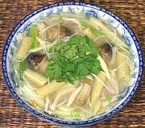

|
Thai Chicken SoupThailand | ||||
| Serves: Effort: Sched: DoAhead: |
4 soup ** 1/2 hrs Part |
A delicous soup with a variety of flavors and texures, popular with Thais of Chinese descent. It may more often be made with bean threads (more Chinese), but I prefer rice sticks. | |||
|
2 5 2 2 2 3.7 4 2.5 3 1/2 ---- |
oz oz oz oz oz oz c t ---- |
Rice Sticks (1) Chicken (2) Thai Chili (3) Bamboo Shoots Scallions Straw Mushroom (1/2 can) Baby Corn (1/2 can) Water Chestnuts Stock Salt -- Garnish Cilantro leaves |
Prep - (15 min)
|